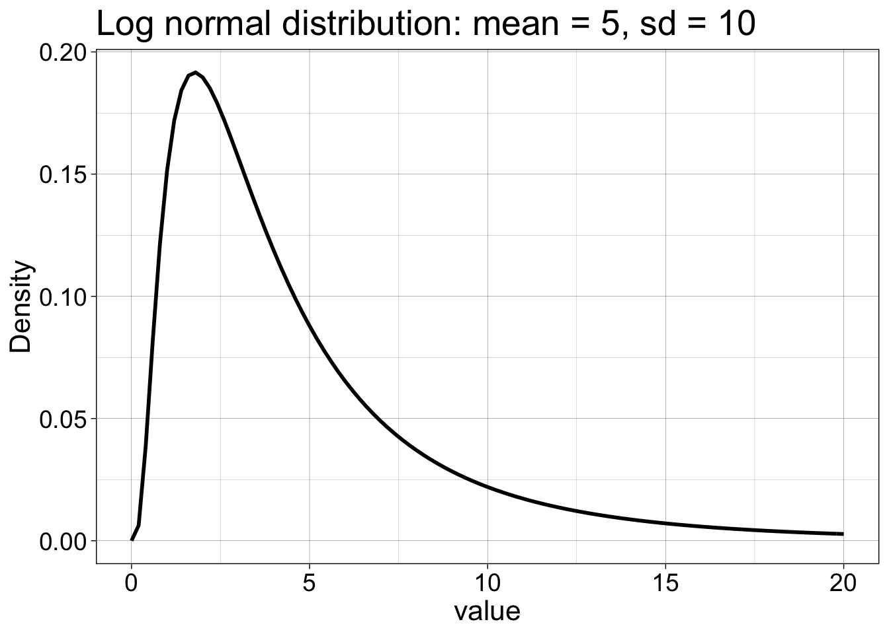
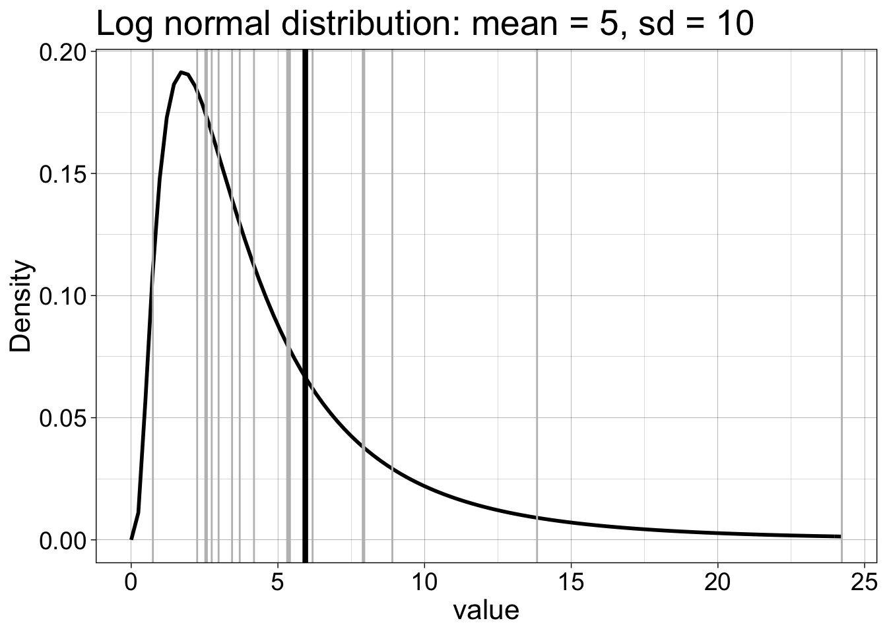

Notebook 4: Sampling distributions
# dependencies
library(ggplot2)
library(tibble)# population
m <- 50
sd <- 10
ggplot(data.frame(x = c(0, 100)), aes(x)) + theme_linedraw() +
stat_function(fun = dnorm, args = list(mean = m, sd = sd)) +
labs(y = "Density") +
theme(axis.text = element_text(size = 14),
axis.title = element_text(size = 16),
plot.title = element_text(size=20)) +
ggtitle(paste0("Normal distribution: mean = ",m,", sd = ",sd))
# ggsave(filename = "b3_normdist.pdf")# one sample
set.seed(4)
n <- 20
samp <- rnorm(n, m, sd)
ggplot(data.frame(x = c(0, 100)), aes(x)) + theme_linedraw() +
stat_function(fun = dnorm, args = list(mean = m, sd = sd)) +
geom_vline(xintercept = samp, colour = "grey") +
labs(y = "Density") +
theme(axis.text = element_text(size = 14),
axis.title = element_text(size = 16),
plot.title = element_text(size=20)) +
ggtitle(paste0("Normal distribution: mean = ",m,", sd = ",sd))
# ggsave(filename = "b3_normdist_1samp.pdf")# one sample + mean
set.seed(4)
n <- 20
samp <- rnorm(n, m, sd)
ggplot(data.frame(x = c(0, 100)), aes(x)) + theme_linedraw() +
stat_function(fun = dnorm, args = list(mean = m, sd = sd)) +
geom_vline(xintercept = samp, colour = "grey") +
geom_vline(xintercept = mean(samp), size = 2) +
labs(y = "Density") +
theme(axis.text = element_text(size = 14),
axis.title = element_text(size = 16),
plot.title = element_text(size=20)) +
ggtitle(paste("Sample mean =",round(mean(samp),digits=1),", sd = ",round(sd(samp),digits=1)))
# ggsave(filename = "b3_normdist_1samp_mean.pdf")# sampling distribution
set.seed(111)
n <- 20
nsim <- 10000
samp.dist <- apply(matrix(rnorm(n*nsim, m, sd),nrow = nsim), 1, mean)
ggplot(data.frame(x=samp.dist), aes(x)) + theme_linedraw() +
geom_histogram(aes(y = ..density..), colour = "black", fill = "white", bins = 50) +
theme(axis.text = element_text(size = 14),
axis.title = element_text(size = 16),
plot.title = element_text(size=20)) +
ggtitle(paste(nsim,"sample means: mean =",round(mean(samp.dist),digits=1),", sd = ",round(sd(samp.dist),digits=2)))
# ggsave(filename = "b3_normdist_10000samp_mean.pdf")Standard error of the mean
SEM = population sd / sqrt(n)
Usually estimated using sample sd / sqrt(n)
sd / sqrt(n)## [1] 2.236068SEM = sd of sampling distribution of the sample mean
sd(samp.dist)## [1] 2.255003t-test confidence interval
Get one sample and apply t.test() function
# one sample
set.seed(4)
n <- 20
samp <- rnorm(n, m, sd)
t.test(samp)##
## One Sample t-test
##
## data: samp
## t = 30.006, df = 19, p-value < 2.2e-16
## alternative hypothesis: true mean is not equal to 0
## 95 percent confidence interval:
## 50.01276 57.51317
## sample estimates:
## mean of x
## 53.76296Compute t value
# Formula
samp.m <- mean(samp) # sample mean
samp.v <- var(samp) # sample variance
sem <- sqrt(samp.v/n) # standard error of the mean
samp.t <- samp.m / sem
samp.t## [1] 30.00562t distribution and quantiles
alpha <- 0.05
df <- n-1 # degrees of freedom
ggplot(data.frame(x = c(-5, 5)), aes(x)) + theme_linedraw() +
stat_function(fun = dt, args = list(df = df)) +
labs(y = "Density") +
theme(axis.text = element_text(size = 14),
axis.title = element_text(size = 16),
plot.title = element_text(size=20)) +
ggtitle(paste0("t distribution: df = ",df,", ",(1-alpha/2)*100,"th quantile = ",round(qt(1-alpha/2, df), digits=2))) +
geom_vline(xintercept = c(-qt(1-alpha/2, df), qt(1-alpha/2, df)), colour = "green", size = 1)
Compute confidence interval
ci <- vector("numeric",2)
ci[1] <- samp.m - qt(1-alpha/2, df) * sem
ci[2] <- samp.m + qt(1-alpha/2, df) * sem
ci## [1] 50.01276 57.51317Example using the lognormal
Blog post on how to use rlnorm().
Illustrate lognormal
# population
m <- 5
s <- 5
location <- log(m^2 / sqrt(s^2 + m^2))
shape <- sqrt(log(1 + (s^2 / m^2)))
x <- seq(0, 20, .05)
ggplot(as_tibble(x), aes(value)) +
theme_linedraw() +
stat_function(fun = dlnorm, args = list(meanlog = location, sdlog = shape), size = 1) +
labs(y = "Density") +
theme(axis.title = element_text(size = 16),
axis.text = element_text(size = 14),
plot.title = element_text(size=20)) +
ggtitle(paste0("Log normal distribution: mean = ",m,", sd = ",sd))
# ggsave(filename = "b3_lnormdist.pdf")One sample from lognormal distribution
set.seed(777)
n <- 20
samp <- rlnorm(n, meanlog = location, sdlog = shape)
x <- seq(0, 20, .05)
ggplot(as_tibble(x), aes(value)) +
theme_linedraw() +
stat_function(fun = dlnorm, args = list(meanlog = location, sdlog = shape), size = 1) +
geom_vline(xintercept = samp, colour = "grey") +
geom_vline(xintercept = mean(samp), size = 1.5) +
labs(y = "Density") +
theme(axis.text = element_text(size = 14),
axis.title = element_text(size = 16),
plot.title = element_text(size=20)) +
ggtitle(paste0("Log normal distribution: mean = ",m,", sd = ",sd))
# ggsave(filename = "b3_lnormdist_1samp.pdf")Many samples from lognormal distribution
set.seed(777)
m <- 5
s <- 5
location <- log(m^2 / sqrt(s^2 + m^2))
shape <- sqrt(log(1 + (s^2 / m^2)))
# population mean?
lnorm.pop.m <- mean(rlnorm(1000000, meanlog = location, sdlog = shape))
n <- 20
nsamp <- 10000
# nsamp experiments in one go + compute mean for each one:
dist.samp <- apply(matrix(rlnorm(n*nsamp, meanlog = location, sdlog = shape), nrow = nsamp), 1, mean)
v <- as_tibble(dist.samp)
ggplot(v, aes(x = value)) + theme_linedraw() +
geom_histogram(aes(y = ..density..), colour = "black", fill = "white", bins = 50) +
# geom_vline(xintercept = mean(dist.samp), size = 1.5) +
theme(axis.text = element_text(size = 14),
axis.title = element_text(size = 16),
plot.title = element_text(size=20)) +
ggtitle(paste(nsim,"sample means: mean =",round(mean(dist.samp),digits=1),", sd = ",round(sd(dist.samp),digits=2)))
# ggsave(filename = "b3_lnormdist_10000samp_mean.pdf")
Guillaume A. Rousselet, 2019, University of Glasgow.